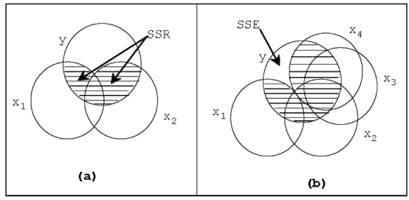
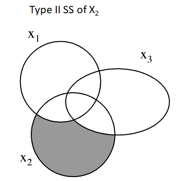
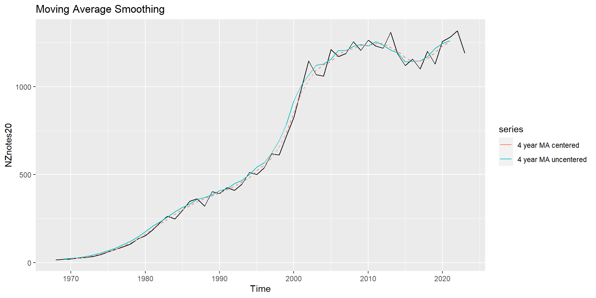
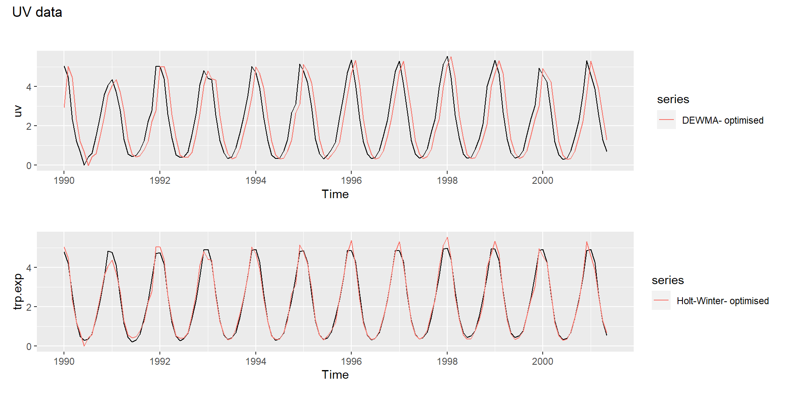
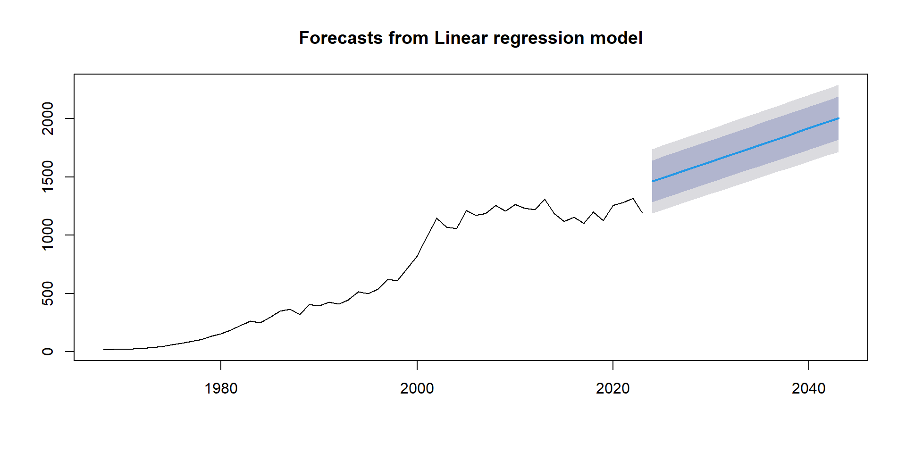
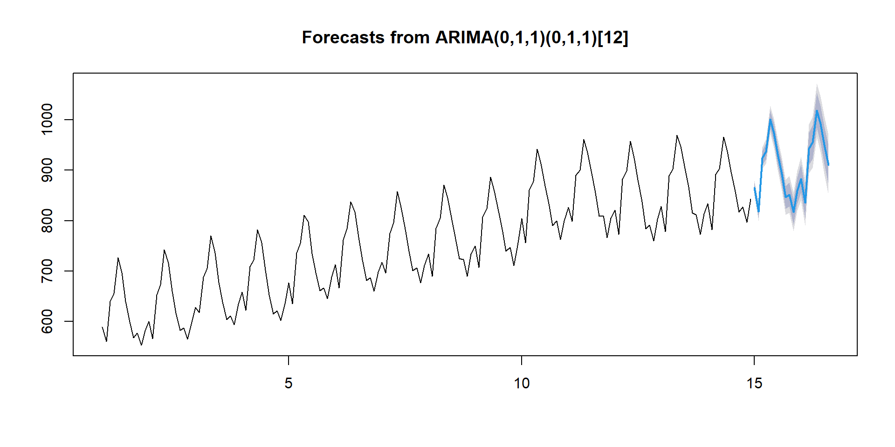

Multicollinearity is where at least two predictor variables are highly correlated.
Multicollinearity does not affect the residual SD very much, and doesn’t pose a major problem for prediction.
The major effects of multicolinearity are:
It changes the estimates of the coefficients.
It inflates the variance of the estimates of the coefficients. That is, it increases the uncertainty about what the slope parameters are.
Therefore, it matters when testing hypotheses about the effects of specific predictors.
The impact of multicollinearity on the variance of the estimates can be quantified using the Variance Inflation Factor (VIF < 5 is considered ok).
There are several ways to deal with multicollinarity, depending on context. We can discard one of highly correlated variable, perform ridge regression, or think more carefully about how the variables relate to each other.
Variation in \(Y\) is separated into two parts SSR and SSE.
The shaded overlap of two circles represent the variation in \(Y\) explained by the \(X\) variables.
The total overlap of \(X_1\) and \(X_2\), and \(Y\) depends on
relationship of \(Y\) with \(X_1\) and \(X_2\)
correlation between \(X_1\) and \(X_2\)

Sequential addition of predictors
Addition of variables decreases SSE and increases SSR and \(R^2\).
\(s^2\) = MSE = SSE/df decreases to a minimum and then increases since addition of variable decreases SSE but adds to df.
Significance of Type I or Seq.SS
The Type I SS is the SS of a predictor after adjusting for the effects of the preceding predictors in the model.
F test for the significance of the additional variation explained
For pinetree data, Second (middle circumference) does not explain significant additional variation after First (bottom circumference)
Analysis of Variance Table
Model 1: Top ~ First
Model 2: Top ~ First + Second
Res.Df RSS Df Sum of Sq F Pr(>F)
1 58 96.6
2 57 90.6 1 6.01 3.78 0.057 .
---
Signif. codes: 0 '***' 0.001 '**' 0.01 '*' 0.05 '.' 0.1 ' ' 1
Type II and or Type III SS
R function anova() calculates sequential or Type-I SS
Type II SS is based on the principle of marginality.
Each variable effect is adjusted for all other appropriate effects.
equivalent to the Type I SS when the variable is the last predictor entered the model.
Order matters for Type I SS but not for Type II SS

Type III SS is the SS added to the regression SS after ALL other predictors including an intercept term.
Violates the marginality principle and so avoided for hypothesis tests
Analysis of Variance Table
Response: Top
Df Sum Sq Mean Sq F value Pr(>F)
Third 1 1494 1494 981.7 < 2e-16 ***
Second 1 131 131 86.1 6.4e-13 ***
First 1 68 68 44.8 1.1e-08 ***
Residuals 56 85 2
---
Signif. codes: 0 '***' 0.001 '**' 0.01 '*' 0.05 '.' 0.1 ' ' 1
Anova Table (Type II tests)
Response: Top
Sum Sq Df F value Pr(>F)
Third 5.4 1 3.52 0.066 .
Second 0.2 1 0.10 0.750
First 68.1 1 44.76 1.1e-08 ***
Residuals 85.2 56
---
Signif. codes: 0 '***' 0.001 '**' 0.01 '*' 0.05 '.' 0.1 ' ' 1
Anova Table (Type III tests)
Response: Top
Sum Sq Df F value Pr(>F)
(Intercept) 87.1 1 57.22 4.0e-10 ***
Third 5.4 1 3.52 0.066 .
Second 0.2 1 0.10 0.750
First 68.1 1 44.76 1.1e-08 ***
Residuals 85.2 56
---
Signif. codes: 0 '***' 0.001 '**' 0.01 '*' 0.05 '.' 0.1 ' ' 1
SS explained is not always a good criterion for selection of variables
Model selection
\(R^2\) (the proportion of variance explained by the model) should not be used to select among candidate models. Adding another predictor variable always increases the \(R^2\), even if the new variable is unrelated in the population.
\(R^2_{adj}\) is adjusted to remove the variation that is explained by chance alone
Heuristic (short-cut) procedures based on criteria such as \(F\), \(R^2_{adj}\), \(AIC\), \(C_p\) etc
Forward Selection: Add variables sequentially
convenient to obtain the simplest feasible model
Backward Elimination: Drop variables sequentially
If difference between two variables is significant but not the variables themselves, forward regression would obtain the wrong model since both may not enter the model.
Known as suppressor variables case
Example: (try)
Best Subsets: Stop at each step and check whether predictors, in the model or outside, are the best combination for that step.
time consuming to perform when the predictor set is large
Software
In \(R\), lm() and step() function will perform the tasks
leaps() and HH packages contain additional functions
Also MASS, car, caret, and SignifReg R packages
R base package step-wise selection is based on \(AIC\) only.
Note
If a model stands out, it will perform well in terms of all summary measures.
If a model does not stand out, summary measures will contradict.
Subset selection object
3 Variables (and intercept)
Forced in Forced out
Third FALSE FALSE
Second FALSE FALSE
First FALSE FALSE
1 subsets of each size up to 2
Selection Algorithm: backward
Third Second First
1 ( 1 ) " " " " "*"
2 ( 1 ) "*" " " "*"
Polynomial models
A polynomial model includes the square, cube of predictor variables as additional variables.
High correlation (multicollinearity) between the predictor variables may be a problem in polynomial models.
Estimate Std. Error t value Pr(>|t|)
(Intercept) 44.121 7.039 6.27 0
poly(First, degree = 3, raw = T)1 -3.972 0.695 -5.71 0
poly(First, degree = 3, raw = T)2 0.142 0.022 6.39 0
poly(First, degree = 3, raw = T)3 -0.001 0.000 -5.95 0
Multicollinearity can occur with polynomial modelling but not always
- For the pinetree example, all the slope coefficients are highly significant for the cubic regression
- Not so for the quadratic regression
Estimate Std. Error t value Pr(>|t|)
(Intercept) 3.85 2.450 1.569 0.122
poly(First, degree = 2, raw = T)1 0.10 0.155 0.646 0.521
poly(First, degree = 2, raw = T)2 0.01 0.002 4.319 0.000
Raw polynomials do not preserve the coefficient estimates but orthogonal polynomials do.
[1] "Settings: unique SS : numeric variables centered"
summary(mdl)
Call:
lmp(formula = Top ~ I2 + I3, data = pinetree1)
Residuals:
Min 1Q Median 3Q Max
-8.92 -3.10 -1.01 3.68 11.93
Coefficients:
Estimate Iter Pr(Prob)
I2 -1.96 110 0.4818
I3 -5.93 5000 0.0048 **
---
Signif. codes: 0 '***' 0.001 '**' 0.01 '*' 0.05 '.' 0.1 ' ' 1
Residual standard error: 4.98 on 57 degrees of freedom
Multiple R-Squared: 0.205, Adjusted R-squared: 0.177
F-statistic: 7.35 on 2 and 57 DF, p-value: 0.00145
Also try all other cases covered just replacing the lm() command with lmp() command.
Time series smoothing
This is a technique to remove the random variation but retain any trend and cyclic type of variations in a time series.
Moving Average Smoothing
Exponential (Average) Smoothing
Moving average smoothing
Compute the mean of successive smaller periods of past data (moving window).
\[M_t = (x_t + x_{t-1} + ... + x_{t-N+1}) / N\] where - \(x_t\)- the observation at time \(t\) & \(N\) - the moving average length/span
Longer the span \(N\), greater the smoothing
MA smoothing for $20 bills data
MA Centering
We need to place moving averages in the middle time period.
- moving average must fall at t = 1.5 2.5, 3.5 etc when the MA length is an even number.
So, smooth again (in pairs) to place the moving averages at t = 2, 3, 4 etc.

Exponential (Average) Smoothing
In exponential average smoothing, past observations are given exponentially decreasing weights.
The average computed using exponentially decreasing weights is known as the Exponentially Weighted Moving average (EWMA).
EWMA definition: \[S_t = \alpha x_t + (1-\alpha) S_{t-1}\] where \(S_t\) = EWMA at time \(t\), \(x_t\) = value of time series at time \(t\) & \(\alpha\) = weighting factor \((0 < \alpha < 1)\)
\(P_t = \delta (X_t-S_t)+(1-\delta)P_{t-p}\) (seasonal equation at period \(p\))
\(\hat{Y}= S_{t-1}+T_{t-1}+P_{t-p}\)
Double & triple exponential smoothing

Forecasting
Projecting the present time series for future time points (Prediction)
Assessment of fit | Forecast accuracy using
Mean Squared Deviation (MSD)
Mean Absolute Deviation (MAD)
Mean Absolute Percentage Error (MAPE)
RMSE MAE MAPE
81.1 59.2 14.2
RMSE MAE MAPE
64.9 48.7 10.1
Time series modelling
We can fit linear models to time series data including trend and seasonality components.
Indicator variables to capture seasonality
Examples:

Box-Jenkins modelling
A Box-Jenkins model is an improvement over the regression approach - combines regression and moving average approaches - suitable when data collected at equally spread time intervals
Box-Jenkins approach consists of the following three stages:
Identification
Estimation
Diagnostics
Past data or lagged data (or simply lags) play an important role
Identification stage of modelling
A time series is stationary if the mean and variance do not change over time.
Alternatively the same probability law applies over time
For a white noise series has a constant mean and variance for all time \(t\).
Stationarity is investigated using the sample autocorrelation function (ACF) (covered in Chapter 2)
Using ACFs, a tentative assessment of the terms or order of the model is made.
Common patterns
Drifting random walk series (non-stationary)
\[X_t = \delta + X_{t-1} + W_t \]
Model the difference \(X_{t} - X_{t-1}\) or just use the first lag \(X_{t-1}\) as a predictor in the usual regression
The process of differencing can be done on the differences too. This process brings stationarity to a series
Ljung-Box test
data: Residuals from ARIMA(0,1,1)(0,1,1)[12]
Q* = 17, df = 22, p-value = 0.7
Model df: 2. Total lags used: 24
Residuals are better now!
Improved model

Summary
Regression methods aim to fit a model by least squares to explain the variation in the dependent variable \(Y\) by fitting explanatory \(X\) variables.
Matrix plots and correlation coefficients provide important clues to the interrelationships.
For building a model, the additional variation explained is important. Summary criterion such as \(AIC\) is also useful.
ANCOVA employs both numerical variables (covariates) and qualitative factors for modelling.
A time series data involve trend and seasonal variations.
Simple smoothing methods are intended to dampen the effect of random errors
Double and triple exponential smoothing deal trends and seasonality
Simple AR models can be built as multiple regression models employing lags as predictors.
Building ARIMA models are more involved and will not be examined in depth.
A model is not judged as the best purely on statistical grounds.